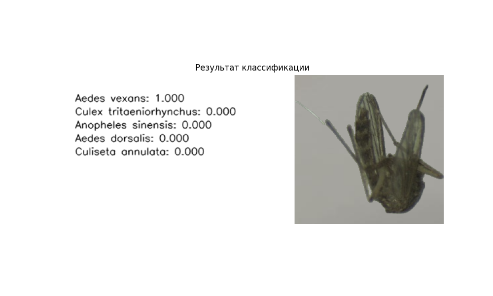

Note
Click here to download the full example code
Классификация видов комаров
Это руководство демонстрирует, как использовать MosquitoClassifier из библиотеки CulicidaeLab
для определения видов комаров по изображениям. Мы пройдем через весь процесс,
от загрузки модели до оценки ее производительности на пакете данных.
Это руководство охватывает:
- Инициализация: Как загрузить настройки и предварительно обученную модель.
- Обработка данных: Как использовать
DatasetsManagerдля получения образцов данных. - Предсказание для одного изображения: Как классифицировать одно изображение комара.
- Визуализация: Как интерпретировать и визуализировать предсказания модели.
- Пакетная оценка: Как измерить точность модели на наборе тестовых изображений.
- Отчетность: Как сгенерировать и визуализировать всесторонний отчет о производительности.
Установите библиотеку culicidaelab, если она еще не установлена
!pip install -q culicidaelab
1. Инициализация и настройка
Наш первый шаг — настройка необходимых компонентов. Мы инициализируем:
settings: Объект, который содержит всю конфигурацию библиотеки, такую как пути к моделям и другие настройки.DatasetsManager: Класс для загрузки и управления образцами наборов данных, используемых в этом руководстве.MosquitoClassifier: Основной класс для выполнения задачи классификации. Мы передадимload_model=True, чтобы убедиться, что веса предварительно обученной модели будут загружены в память сразу же.
Импорт необходимых библиотек для визуализации
import matplotlib.pyplot as plt
# Импорт требуемых классов из библиотеки CulicidaeLab
from culicidaelab import (
DatasetsManager,
MosquitoClassifier,
get_settings,
)
# Получаем экземпляр настроек библиотеки по умолчанию
settings = get_settings()
# Инициализируем сервисный класс, необходимый для управления и загрузки данных
manager = DatasetsManager(settings)
# Создаем экземпляр классификатора и загружаем модель.
# При первом запуске это может занять некоторое время, так как будут загружаться веса модели.
print("Инициализация MosquitoClassifier и загрузка модели...")
classifier = MosquitoClassifier(settings, load_model=True)
print("Модель успешно загружена.")
Out:
Инициализация MosquitoClassifier и загрузка модели...
Weights file found at: C:\Users\lenova\AppData\Local\culicidaelab\culicidaelab\models\blobs\1719be673435fa3b1c753f648c6e40b8014d48574b621719d56333066c9e2891
C:\Users\lenova\CascadeProjects\culicidaelab\.venv\Lib\site-packages\fastai\learner.py:455: UserWarning: load_learner` uses Python's insecure pickle module, which can execute malicious arbitrary code when loading. Only load files you trust.
If you only need to load model weights and optimizer state, use the safe `Learner.load` instead.
warn("load_learner` uses Python's insecure pickle module, which can execute malicious arbitrary code when loading. Only load files you trust.\nIf you only need to load model weights and optimizer state, use the safe `Learner.load` instead.")
Модель успешно загружена.
Просмотр классов модели
Прежде чем начать определение видов, полезно знать, какие виды модель была обучена распознавать. Мы можем легко получить доступ к этой информации из объекта настроек.
species_map = settings.species_config.species_map
print(f"--- Модель может распознавать {len(species_map)} классов ---")
# Выведем первые 5 для краткости
for idx, name in list(species_map.items())[:5]:
print(f" Индекс класса {idx}: {name}")
print(" ...")
Out:
--- Модель может распознавать 18 классов ---
Индекс класса 0: Aedes aegypti
Индекс класса 1: Aedes albopictus
Индекс класса 2: Aedes canadensis
Индекс класса 3: Aedes dorsalis
Индекс класса 4: Aedes geniculatus
...
2. Загрузка тестового набора данных
В этом руководстве мы будем использовать встроенный тестовый набор данных, предоставляемый библиотекой.
DatasetsManager упрощает загрузку и использование этих данных. Набор данных
содержит изображения и соответствующие им правильные метки классов (виды комаров),
которые мы будем использовать для сравнения с результатами работы классификатора
и их последующей оценки.
print("\n--- Загрузка тестовой части ('test' split) набора данных 'classification' ---")
classification_test_data = manager.load_dataset("classification", split="test")
print("Тестовый набор данных успешно загружен!")
print(f"Количество образцов в тестовом наборе данных: {len(classification_test_data)}")
# Давайте выберем один образец для работы.
# Образец представляет собой словарь, содержащий изображение и его истинную метку.
sample_index = 287
sample = classification_test_data[sample_index]
image = sample["image"]
ground_truth_label = sample["label"]
print(f"\nИстинная метка выбранного образца: '{ground_truth_label}'")
# Отображаем входное изображение
plt.figure(figsize=(6, 6))
plt.imshow(image)
plt.title(f"Входное изображение\n(Истинная метка: {ground_truth_label})")
plt.axis("off")
plt.show()
Out:
--- Загрузка тестовой части ('test' split) набора данных 'classification' ---
Cache hit for split config: test (key: 4d967a30111bf29f)
Тестовый набор данных успешно загружен!
Количество образцов в тестовом наборе данных: 328
Истинная метка выбранного образца: 'aedes_vexans'
C:/Users/lenova/CascadeProjects/culicidaelab/docs/ru/examples/tutorial_part_4_mosquito_classification.py:104: UserWarning: FigureCanvasAgg is non-interactive, and thus cannot be shown
plt.show()
3. Классификация одного изображения
Теперь мы будем использовать классификатор для определения вида комара на нашем
выбранном изображении. Метод predict() принимает изображение (в виде массива NumPy,
пути к файлу или объекта PIL Image) и возвращает список видов комаров, отсортированный
от наиболее до наименее вероятного.
Запускаем классификацию на нашем образце изображения
predictions = classifier.predict(image)
# Выводим топ-5 предсказаний в читаемом формате
print("--- Топ-5 предсказаний ---")
for species, probability in predictions[:5]:
print(f"{species}: {probability:.2%}")
Out:
--- Топ-5 предсказаний ---
Aedes vexans: 100.00%
Culex tritaeniorhynchus: 0.00%
Anopheles sinensis: 0.00%
Aedes dorsalis: 0.00%
Culiseta annulata: 0.00%
4. Визуализация и интерпретация результатов
Необработанный список определённых классификатором видов полезен, но визуализации делают результаты гораздо более понятными. Мы создадим два графика:
- Гистограмма: Показывает уверенность модели для каждого возможного вида. Это отлично подходит не только для просмотра лучшего варианта ответа, но и для того, чтобы увидеть, какие другие виды и их вероятности определила модель.
- Подписанное изображение: Использует встроенный метод
visualize()для создания итогового изображения, которое отображает топ-5 вариантов, определённых моделью, рядом с исходным изображением.
Создаем гистограмму для визуализации вероятностей для всех видов
plt.figure(figsize=(10, 8))
# Предсказания уже отсортированы, поэтому мы можем их сразу построить
species_names = [p[0] for p in predictions]
probabilities = [p[1] for p in predictions]
# Мы развернем списки (`[::-1]`), чтобы самая высокая вероятность была вверху
bars = plt.barh(species_names[::-1], probabilities[::-1])
# Выделяем столбцы, которые соответствуют нашему порогу уверенности
conf_threshold = settings.get_config("predictors.classifier.confidence")
for bar in bars:
if bar.get_width() >= conf_threshold:
bar.set_color("teal")
else:
bar.set_color("lightgray")
# Добавляем контрольную линию для порога уверенности
plt.axvline(
x=conf_threshold,
color="red",
linestyle="--",
label=f"Порог уверенности ({conf_threshold:.0%})",
)
plt.xlabel("Присвоенная вероятность")
plt.title("Вероятности классификации видов")
plt.legend()
plt.tight_layout()
plt.show()
Out:
C:/Users/lenova/CascadeProjects/culicidaelab/docs/ru/examples/tutorial_part_4_mosquito_classification.py:166: UserWarning: FigureCanvasAgg is non-interactive, and thus cannot be shown
plt.show()
Теперь давайте используем встроенный визуализатор для получения итогового изображения
annotated_image = classifier.visualize(image, predictions)
plt.figure(figsize=(10, 6))
plt.imshow(annotated_image)
plt.title("Результат классификации")
plt.axis("off")
plt.show()

Out:
C:/Users/lenova/CascadeProjects/culicidaelab/docs/ru/examples/tutorial_part_4_mosquito_classification.py:176: UserWarning: FigureCanvasAgg is non-interactive, and thus cannot be shown
plt.show()
5. Оценка точности модели с использованием пакета данных
Хотя классификация одного изображения полезна, более строгая проверка включает
оценку качества модели на всем наборе данных. Метод
evaluate_batch() как раз для этого предназначен. Он обрабатывает пакет
изображений и их соответствующие истинные метки, а затем вычисляет агрегированные
метрики.
Результатом является отчёт report, содержащий ключевые метрики, такие как средняя
точность и матрицу ошибок, которая точно показывает, где модель
преуспевает или ошибается.
Для примера оценим первые 30 изображений из тестового набора
num_samples_to_evaluate = 30
batch_samples = classification_test_data.select(range(num_samples_to_evaluate))
batch_images = [sample["image"] for sample in batch_samples]
ground_truths = [sample["label"] for sample in batch_samples]
print(f"\n--- Оценка пакета из {len(batch_images)} изображений ---")
# Запускаем пакетную оценку.
# Метод может принимать результаты определения видов и истинные метки для их сравнения,
# или вызывать классификатор для получения результатов перед оценкой, если предоставлены
# только изображения.
report = classifier.evaluate_batch(
input_data_batch=batch_images,
ground_truth_batch=ground_truths,
show_progress=True,
)
print("\n--- Сводка отчета об оценке ---")
for key, value in report.items():
if key != "confusion_matrix":
# Проводим форматирование в зависимости от типа значения
if isinstance(value, float):
print(f" {key}: {value:.4f}")
else:
print(f" {key}: {value}")
Out:
--- Оценка пакета из 30 изображений ---
█
|--------------------------------------------------| 0.00% [0/30 00:00<?]
|█-------------------------------------------------| 3.33% [1/30 00:00<00:00]
|███-----------------------------------------------| 6.67% [2/30 00:00<00:00]
|█████---------------------------------------------| 10.00% [3/30 00:00<00:00]
|██████--------------------------------------------| 13.33% [4/30 00:00<00:00]
|████████------------------------------------------| 16.67% [5/30 00:00<00:00]
|██████████████████████████████████████████████████| 100.00% [30/30 00:00<00:00]
C:\Users\lenova\CascadeProjects\culicidaelab\.venv\Lib\site-packages\sklearn\metrics\_ranking.py:424: UndefinedMetricWarning: Only one class is present in y_true. ROC AUC score is not defined in that case.
warnings.warn(
C:\Users\lenova\CascadeProjects\culicidaelab\.venv\Lib\site-packages\sklearn\metrics\_ranking.py:424: UndefinedMetricWarning: Only one class is present in y_true. ROC AUC score is not defined in that case.
warnings.warn(
C:\Users\lenova\CascadeProjects\culicidaelab\.venv\Lib\site-packages\sklearn\metrics\_ranking.py:424: UndefinedMetricWarning: Only one class is present in y_true. ROC AUC score is not defined in that case.
warnings.warn(
--- Сводка отчета об оценке ---
accuracy_mean: 1.0000
accuracy_std: 0.0000
confidence_mean: 0.9982
confidence_std: 0.0062
top_1_correct_mean: 1.0000
top_1_correct_std: 0.0000
top_5_correct_mean: 1.0000
top_5_correct_std: 0.0000
count: 30
roc_auc: nan
6. Визуализация отчета с оценкой качества модели
Сгенерированный словарь report содержит много информации, но
матрица ошибок лучше всего воспринимается визуально. Метод visualize_report()
создает комплексный график, который демонстрирует результаты оценки.
Как читать матрицу ошибок: - Каждая строка представляет фактический (истинный) вид. - Каждый столбец представляет вид, который определила модель. - Диагональ (от верхнего левого до нижнего правого угла) показывает количество правильных ответов для каждого класса. - Числа вне диагонали указывают на неверные классификации. Например, число в строке «A» и столбце «B» означает, что изображение вида A было неверно классифицировано как вид B.
Передаем отчет в функцию визуализации

Out:
C:\Users\lenova\CascadeProjects\culicidaelab\culicidaelab\predictors\classifier.py:396: UserWarning: FigureCanvasAgg is non-interactive, and thus cannot be shown
plt.show()
7. Пакетное предсказание для обеспечения эффективных вычислений
Если цель — классифицировать много изображений, использование predict_batch()
гораздо эффективнее, чем итерация по predict().
Этот метод может быть в разы эффективнее при использовании GPU для параллельной обработки изображений.
Мы будем использовать тот же небольшой пакет из нашего примера оценки
print(
f"\n--- Классификация пакета из {len(batch_images)} изображений с помощью predict_batch ---",
)
batch_predictions = classifier.predict_batch(batch_images, show_progress=True)
print("\n--- Результаты пакетной классификации (Лучшее предсказание для каждого изображения) ---")
for i, single_image_preds in enumerate(batch_predictions):
if single_image_preds: # Проверяем, что список с результатами не пуст
top_pred_species = single_image_preds[0][0]
top_pred_conf = single_image_preds[0][1]
print(
f" - Изображение {i+1} (Истинная метка: {ground_truths[i]}): "
f"Предсказан '{top_pred_species}' с уверенностью {top_pred_conf:.2%}.",
)
else:
print(f" - Изображение {i+1} (Истинная метка: {ground_truths[i]}): Предсказание не удалось.")
Out:
--- Классификация пакета из 30 изображений с помощью predict_batch ---
--- Результаты пакетной классификации (Лучшее предсказание для каждого изображения) ---
- Изображение 1 (Истинная метка: aedes_triseriatus): Предсказан 'Aedes triseriatus' с уверенностью 99.81%.
- Изображение 2 (Истинная метка: aedes_triseriatus): Предсказан 'Aedes triseriatus' с уверенностью 97.41%.
- Изображение 3 (Истинная метка: aedes_triseriatus): Предсказан 'Aedes triseriatus' с уверенностью 99.98%.
- Изображение 4 (Истинная метка: aedes_triseriatus): Предсказан 'Aedes triseriatus' с уверенностью 100.00%.
- Изображение 5 (Истинная метка: aedes_triseriatus): Предсказан 'Aedes triseriatus' с уверенностью 100.00%.
- Изображение 6 (Истинная метка: aedes_triseriatus): Предсказан 'Aedes triseriatus' с уверенностью 99.99%.
- Изображение 7 (Истинная метка: aedes_triseriatus): Предсказан 'Aedes triseriatus' с уверенностью 99.89%.
- Изображение 8 (Истинная метка: aedes_triseriatus): Предсказан 'Aedes triseriatus' с уверенностью 100.00%.
- Изображение 9 (Истинная метка: aedes_triseriatus): Предсказан 'Aedes triseriatus' с уверенностью 100.00%.
- Изображение 10 (Истинная метка: aedes_triseriatus): Предсказан 'Aedes triseriatus' с уверенностью 100.00%.
- Изображение 11 (Истинная метка: aedes_triseriatus): Предсказан 'Aedes triseriatus' с уверенностью 99.95%.
- Изображение 12 (Истинная метка: aedes_triseriatus): Предсказан 'Aedes triseriatus' с уверенностью 97.62%.
- Изображение 13 (Истинная метка: aedes_triseriatus): Предсказан 'Aedes triseriatus' с уверенностью 100.00%.
- Изображение 14 (Истинная метка: aedes_triseriatus): Предсказан 'Aedes triseriatus' с уверенностью 100.00%.
- Изображение 15 (Истинная метка: aedes_triseriatus): Предсказан 'Aedes triseriatus' с уверенностью 99.99%.
- Изображение 16 (Истинная метка: aedes_triseriatus): Предсказан 'Aedes triseriatus' с уверенностью 100.00%.
- Изображение 17 (Истинная метка: aedes_triseriatus): Предсказан 'Aedes triseriatus' с уверенностью 100.00%.
- Изображение 18 (Истинная метка: aedes_triseriatus): Предсказан 'Aedes triseriatus' с уверенностью 100.00%.
- Изображение 19 (Истинная метка: aedes_triseriatus): Предсказан 'Aedes triseriatus' с уверенностью 99.99%.
- Изображение 20 (Истинная метка: aedes_triseriatus): Предсказан 'Aedes triseriatus' с уверенностью 100.00%.
- Изображение 21 (Истинная метка: aedes_dorsalis): Предсказан 'Aedes dorsalis' с уверенностью 100.00%.
- Изображение 22 (Истинная метка: aedes_dorsalis): Предсказан 'Aedes dorsalis' с уверенностью 100.00%.
- Изображение 23 (Истинная метка: aedes_dorsalis): Предсказан 'Aedes dorsalis' с уверенностью 99.93%.
- Изображение 24 (Истинная метка: aedes_dorsalis): Предсказан 'Aedes dorsalis' с уверенностью 100.00%.
- Изображение 25 (Истинная метка: aedes_dorsalis): Предсказан 'Aedes dorsalis' с уверенностью 100.00%.
- Изображение 26 (Истинная метка: aedes_dorsalis): Предсказан 'Aedes dorsalis' с уверенностью 100.00%.
- Изображение 27 (Истинная метка: aedes_dorsalis): Предсказан 'Aedes dorsalis' с уверенностью 100.00%.
- Изображение 28 (Истинная метка: aedes_dorsalis): Предсказан 'Aedes dorsalis' с уверенностью 100.00%.
- Изображение 29 (Истинная метка: aedes_dorsalis): Предсказан 'Aedes dorsalis' с уверенностью 100.00%.
- Изображение 30 (Истинная метка: aedes_dorsalis): Предсказан 'Aedes dorsalis' с уверенностью 100.00%.
Total running time of the script: ( 1 minutes 37.146 seconds)
Download Python source code: tutorial_part_4_mosquito_classification.py
Download Jupyter notebook: tutorial_part_4_mosquito_classification.ipynb